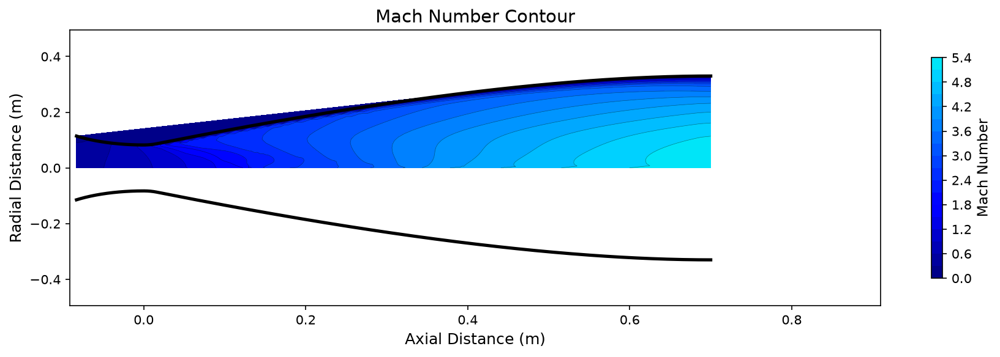
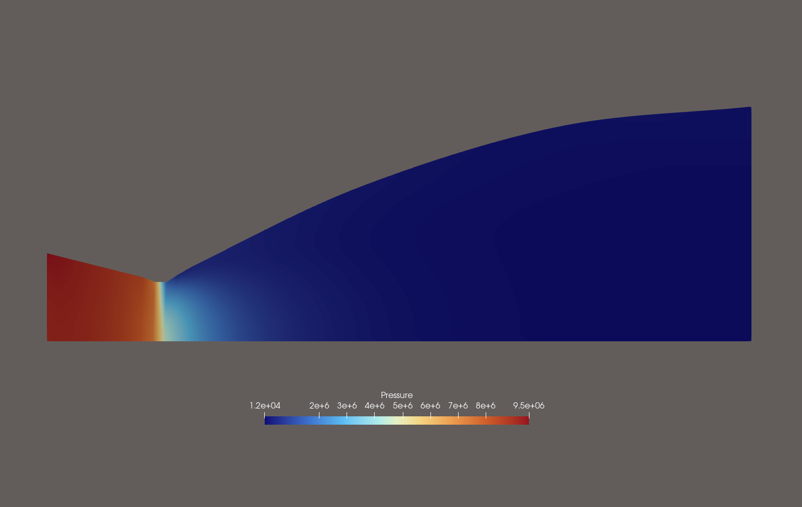
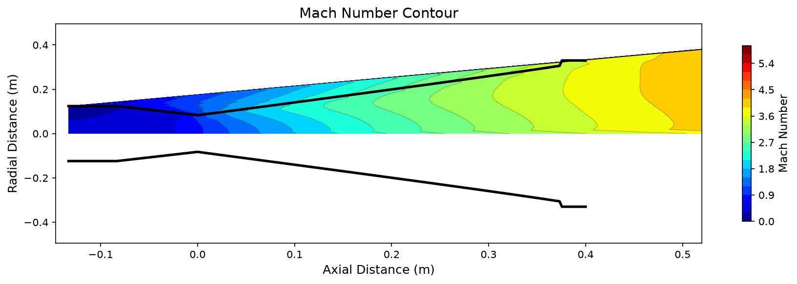
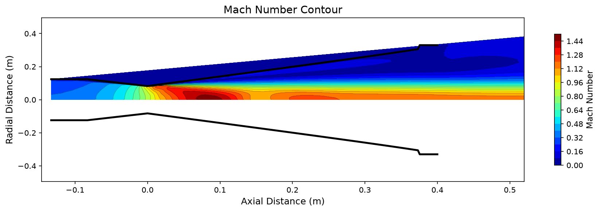
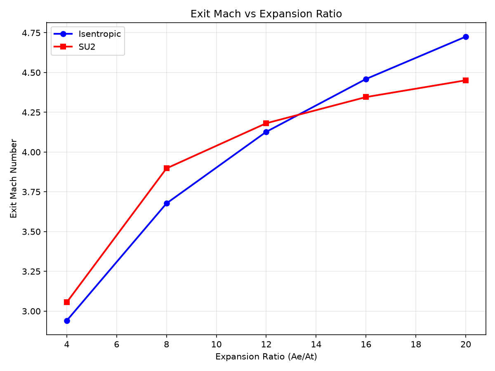
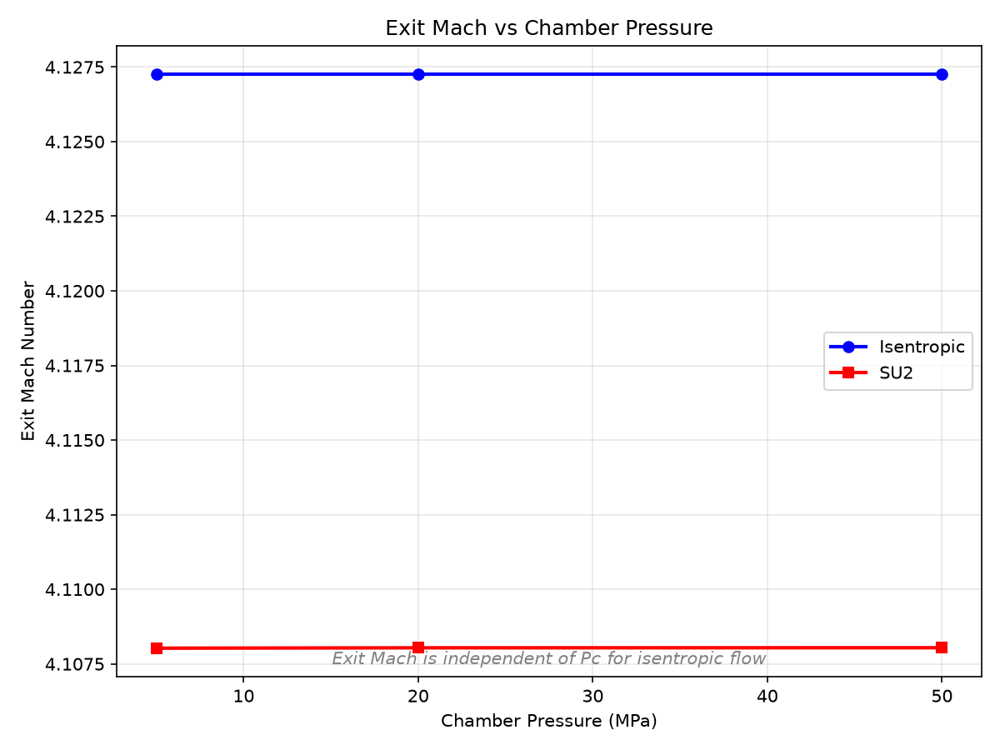
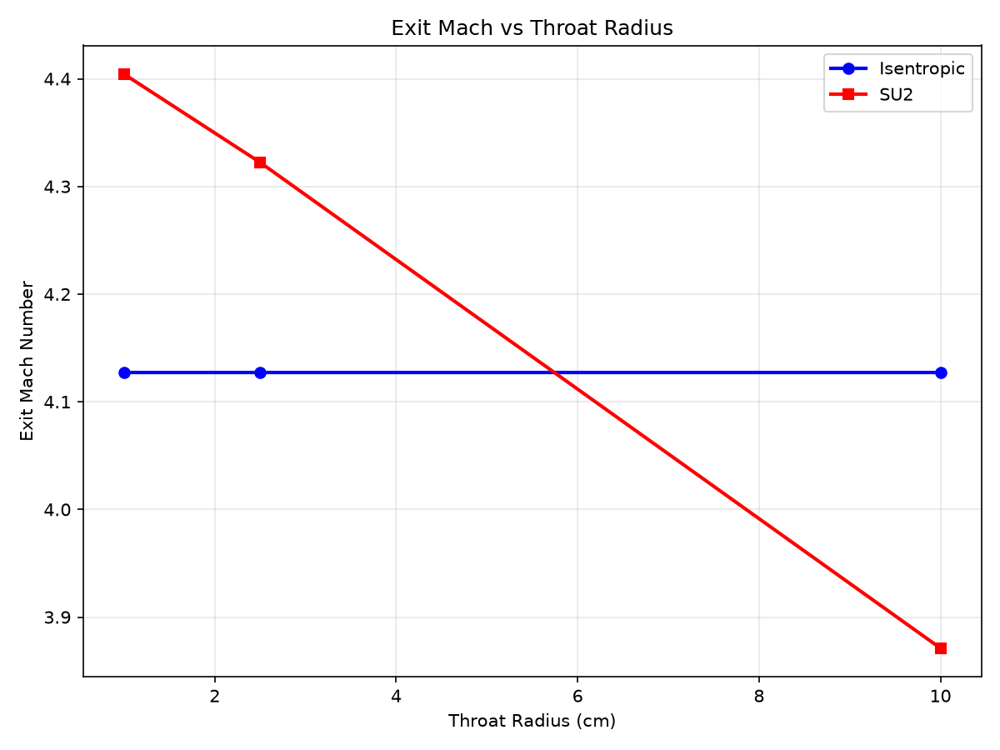

Results
CFD analysis results for four rocket nozzle configurations: generic Rao bell, SpaceX Merlin 1D, RS-25, and RL10B-2.
Nozzle Models
| Engine | Application | Expansion Ratio | Throat (mm) | Exit (mm) | Pc (MPa) |
|---|---|---|---|---|---|
| Generic (Rao Bell) | Reference case | 16:1 | 100 | 400 | 9.7 |
| SpaceX Merlin 1D | Falcon 9 first stage | 16:1 | 165 | 660 | 9.7 |
| RS-25 | Space Shuttle / SLS | 77.5:1 | 272 | 2400 | 20.6 |
| RL10B-2 | Delta IV upper stage | 285:1 | 154 | 2600 | 4.2 |
| SpaceX Raptor SL | Starship Super Heavy booster | 34:1 | 165 | 960 | 33.0 |
Generic Nozzle (Rao Bell)
Reference case: epsilon=16, R*=50mm, Pc=9.7 MPa
Nozzle Geometry & Mesh

Structured O-grid mesh with Rao parabolic bell contour. 60x30 cells with boundary layer refinement.
Mach Number: Euler vs RANS
Euler (Inviscid)

Exit Mach: 4.44 (0.40% error)
RANS SST (Viscous)

Exit Mach: 4.45 (0.19% vs Euler)
Pressure Distribution

Static pressure drops from 9.7 MPa (chamber) to 101 kPa (ambient) through the nozzle.
Shock Diamonds

Density gradient magnitude reveals shock diamond pattern in exhaust plume.
Plume Extension
Euler Plume

RANS Plume

Conformal plume mesh captures shock diamond structure downstream of nozzle exit.
SpaceX Merlin 1D
Falcon 9 first stage: epsilon=16, R*=82.5mm, Pc=9.7 MPa
Nozzle Geometry
2D Annotated Profile

epsilon=16:1, R_t=82.5mm
3D Revolved Surface

Axisymmetric surface of revolution
Mach Number: Euler vs RANS
Euler (Inviscid)
Merlin 1D Euler Mach contour.
Save as: assets/images/merlin/mach_euler_merlin.png
RANS SST (Viscous)
Merlin 1D RANS Mach contour.
Save as: assets/images/merlin/mach_rans_merlin.png
Pressure Distribution
Merlin 1D pressure contour.
Save as: assets/images/merlin/pressure_merlin.png
Shock Diamonds
Merlin 1D shock diamond visualization.
Save as: assets/images/merlin/shock_diamonds_merlin.png
Plume Extension
Euler Plume
Merlin 1D Euler plume.
Save as: assets/images/merlin/plume_euler_merlin.png
RANS Plume
Merlin 1D RANS plume.
Save as: assets/images/merlin/plume_rans_merlin.png
RS-25 (Space Shuttle Main Engine)
Space Shuttle / SLS core stage: epsilon=77.5, R*=136mm, Pc=20.6 MPa
Nozzle Geometry
2D Annotated Profile

epsilon=77.5:1, R_t=136mm
3D Revolved Surface

Axisymmetric surface of revolution
Mach Number: Euler vs RANS
Euler (Inviscid)
RS-25 Euler Mach contour.
Save as: assets/images/rs25/mach_euler_rs25.png
RANS SST (Viscous)
RS-25 RANS Mach contour.
Save as: assets/images/rs25/mach_rans_rs25.png
Pressure Distribution
RS-25 pressure contour. Pressure drops from 20.6 MPa through the long diverging section.
Save as: assets/images/rs25/pressure_rs25.png
Shock Diamonds
RS-25 exhaust plume visualization. Flow separation may occur at sea level due to overexpansion.
Save as: assets/images/rs25/shock_diamonds_rs25.png
Plume Extension
Euler Plume
RS-25 Euler plume.
Save as: assets/images/rs25/plume_euler_rs25.png
RANS Plume
RS-25 RANS plume.
Save as: assets/images/rs25/plume_rans_rs25.png
RL10B-2 (Delta IV Upper Stage)
Delta IV upper stage: epsilon=285, R*=77mm, Pc=4.2 MPa
Nozzle Geometry
2D Annotated Profile

epsilon=285:1, R_t=77mm
3D Revolved Surface

Axisymmetric surface of revolution
Mach Number: Euler vs RANS
Euler (Inviscid)
RL10B-2 Euler Mach contour.
Save as: assets/images/rl10b2/mach_euler_rl10b2.png
RANS SST (Viscous)
RL10B-2 RANS Mach contour.
Save as: assets/images/rl10b2/mach_rans_rl10b2.png
Pressure Distribution
RL10B-2 pressure contour. Very low exit pressure due to extreme expansion ratio.
Save as: assets/images/rl10b2/pressure_rl10b2.png
Shock Diamonds
RL10B-2 exhaust plume. Minimal shock diamond structure at sea level due to extreme overexpansion.
Save as: assets/images/rl10b2/shock_diamonds_rl10b2.png
Plume Extension
Euler Plume
RL10B-2 Euler plume.
Save as: assets/images/rl10b2/plume_euler_rl10b2.png
RANS Plume
RL10B-2 RANS plume.
Save as: assets/images/rl10b2/plume_rans_rl10b2.png
Parametric Sweeps
Exit Mach vs Expansion Ratio

Exit Mach increases with expansion ratio following the isentropic area-Mach relation.
Exit Mach vs Chamber Pressure

Exit Mach is independent of chamber pressure for calorically perfect gas.
Exit Mach vs Throat Radius

Exit Mach is independent of absolute scale for geometrically similar nozzles.